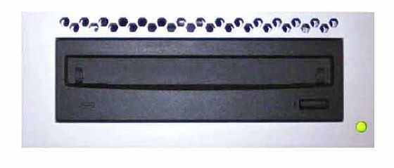
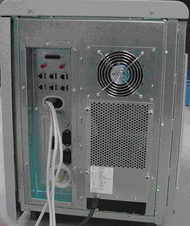
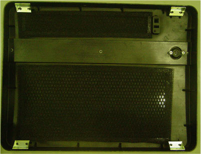

Operating Documentation
Direction 5181178-800, Rev# 16
BrightSpeed Select Service Methods Gen
Module Version 2.1, Version Date 11/11/10
Operating Documentation |
| Last Revised on: | June 15, 2009 |
This module contains the following subsections:
Section 1 - Overview (True-In-One Console)
Section 2 - Host computer xw8600
Section 3 - GPU Card (Option)
Section 4 - Power
Section 5 - Intercom Component
Section 6 - Peripheral Media Tower
Section 7 - Cooling Package
Section 8 - Service and Diagnostics
Section 9 - Console Block Diagrams
The True-In-One Console consists of the following components.
Host Computer - incorporates the Scan Data Disks and CDIP/CDIP2 board from DARC Node in the previous console GRE/GOC4. There is no DRAC node presence in TIO (True-In-One) console.
GPU: an optional graphic card is used as GPU card for ASIR, 16 FPS option and Fluoro option. Image generator (IG) node is not used for TIO console.
Intercom - Is the same as previous console version GRE/GOC4.
Cooling Package, including:
Fans
Front and Rear Covers with Foam Insulation
Air Filter
For TIO console, Host computer receives raw data from the Data Acquisition System (DAS) through an on-board Data Interface processor (CDIP/CDIP2) card, and stores that data in the Scan Data Disks located in the Host computer. The raw data is then delivered from the scan data disks in the Host PC to the IG processes in Host PC. The IG processes then create images (If GPU card is installed, GPU card will be utilized during BP reconstruction). The images generated are saved in image disk in host computer.
The host computer for the True-In-One console will be an off-the-shelf, Linux-based system, which meets the EMC standard CISPR 11.
Key performance specification of the TIO console are:
Recon times: 6 fps with software BP, 16 fps with GPU BP
Latency: < 5.0 seconds
Image Matrix: < 512 x 512 pixels
Host Computer in TIO console not only provides the same functions as previous console GOC4, but also provides data acquisition and image reconstruction functions.
Host Computer controls all the TIO console functions and data flow, including actual image generation. Software in Host computer sends the reconstruction request, recognize the recon mode, timing, parameters, and data, and be able to generate the image set. The raw data is first restored from the disks. The Host Computer then creates an image set and requests image generation to the IG node (If presence) or IG process in Host Computer. While most of the software components (e.g. Recon_Control, Data_Restore, Image_Buffer, and Data_Acq) reside on Host Computer, the components related to image generation also reside on Host Computer.
Main data flow of the Host Computer is described as follows:
Receive raw data from the Gantry
Store the raw data to the scan data disks
Restore the raw data from the scan data disks and transfer to buffer memory in Host Computer.
Take multi-image streams from Image generation processes ran on Host computer, and be saved on image disk in Host Computer.
The Host Computer is comprised of the following:
HP computer: a computer using a high-performance PC workstation
System disk: the OS and Applications software are stored on this disk
Image disk: Images are stored on this disk
Scan data disks: the raw data are stored on two scan data disks.
CDIP/CDIP2 card: the DAS Interface Processor card
Gigabit Ethernet (GbE) cards
DVD-ROM drive: will be used for software installation and stand-alone use
Floppy drive: a 3½” floppy drive will be used for BIOS flash, if necessary
SCSI card: used to connect SCSI tower
Graphics board: connect to two LCD monitors
GPU: an optional graphic card is used for 16 FPS image reconstruction, ASIR or Fluoro option.
The Host Computer will take advantage of a standard, off-the-shelf motherboard, using dual microprocessors to increase processing density. The Host Computer will use very high performance general-purpose processors, memory, and a server motherboard with GB Ethernet and SAS port(s), and power supply.
Dual Processors: Intel ® Xeon™ Quad Core processors or successor
Memory: Min. 8GB FBD DDR2-667 REG ECC DIMM
Onboard SAS Devices: four (4) SAS ports reside on mother board
Seven (7) PCI/PCI-X/PCI-E expansion slots.
SLOT 1 PCI: Quad port USB 2.0 PCI card
SLOT 2 PCI-E: graphics card
SLOT 3 PCI-E: PCI-e SCSI card
SLOT 4 PCI-E: GPU card
SLOT 5 PCI-X: Not usable. GPU card covers two slots.
SLOT 6 PCI-X: Dual Port Gigabit Ethernet Card
SLOT 7 PCI-X: CDIP/CDIP2 card
The chassis is a standard EIA 19" x 4U rack-mount with a max. depth of 20". The chassis have a cooling system capable of sufficiently dissipating heat created by the motherboard's dual processors.
Power Supply: ATX or SSI EEB compliant; input 100-120Vac / 200-240Vac, @ 50-60Hz, auto-detecting
There are four (4) SAS hard disk drives (146GB) in Host computer. Below are the definition of these four hard disk drives:
SAS0: System disk
SAS1: Image disk
SAS2: Scan data disk 1
SAS3: Scan data disk 2
Below are key performance specifications of the hard disk drives:
Minimum rotational rate of 15,000 RPM
SAS interface (3 Gigabits/second burst rate)
Formatted capacity of 146 Gigabytes
Form Factor: 3.5” half height form factor
The Scan Data Disks are connected to the mother board via internal SAS bus cable. To increase the disk read/write speeds software RAID0 (striping) is employed.
This PCI CDIP/CDIP2 card supports almost the same functionality as the current DIP in that it converts the optical signal received from the Gantry into electrical raw data and writes that data to one of the double buffers on the card. When the received data count reaches a predetermined value it will switch over to the other buffer. The Host Computer then receives this data via the PCI bus. This card supports 64bit, 66MHz, PCI bus interface with an FPGA, and should be able to support 833MB/sec data rate optical fiber interface.
The fiber cable connection port of CDIP/CDIP2 board is different from the port on CDIP/CDIP2 board.
TGPU board in gantry is connected to the Host computer via Gigabit Ethernet (GbE) card connected to one of the PCI-X slots.
Gigabit Ethernet (GbE) card:
Dual Gigabit Ethernet ports
10Base-T, 100Base-TX, 1000Base-TX IEEE802.3ab compatible
64bit, 66MHz (or higher) PCI-X interface
Low profile form factor
Gigabit Ethernet card ports definition is described below:
| Physical Port | Name | xw8600 | Location |
| A | Switch Hub | Eth3 | on Mother board |
| B | HSP | Eth2 | on Mother board |
| C | Gantry TGPU | Eth1 | on NIC Card |
| D | Empty | Eth0 (master hostid) | on NIC Card |
The USB ports on Host Computer are used to connect the peripheral devices. The definition of USB ports is listed as below:
Table 1:
| Physical Port | Definition |
| 1 | Trackball |
| 2 | Mouse |
| 3 | Keyboard |
| 4 | Barcode reader |
| 5 | Modem |
| 6 | Tower DVD-RW |
| 7 | Tower DVD-RAM |
| 8 | Tower external Hard disk |
| 9 | Backup |
| Front | Service key |
The DVD-ROM drive is used for software installation, system diagnostics, and to support stand-alone operation of the Host computer.
This 3½” floppy disk drive will be used for BIOS upgrades or for a boot disk, if necessary.
This PCI card accelerates the back-projection process of the TIO console and is plugged into PCI-e slot in the Host Computer.
This parallel beam back-projector provides the TIO console the ability to off-load the back-projection application from general-purpose processors to fully programmable hardware. This option dramatically increases the reconstruction performance per cost ratio.
Following are the high-level CTQs for the GPU card:
Perform parallel beam back-projection at >16fps
PCI-e compatible
Reconstruct any image matrix size up to 524,288 32bit pixels
The Host computer is powered by an AC switching power supply internal chassis. The Host Computer receives its AC power from a 120Vac single-phase outlet box internal to the console chassis.
A redundant power supply and/or UPS option does not need to be supported by Host Computer. The NGPDU will provide 120Vac to the operator's console. The switching power supply internal to Host Computer is required to allow ±5% stability.
These AC switching power supply in Host Computer shall be ATX compliant.
ATX: standard PC power supply, 20-pin for motherboard, 4-pin for peripherals
The table below lists the power supply wattage, input port (max current), and output port fo Host Computer.
| Power Supply | Wattage | Input Port | Output Port |
| Host Computer | 800W Max | Max 13.2 A @ 100-127 Vac Max 6.6 A @ 200-240 Vac | |
The intercom block has an audio amplifier circuit, enabling communication between the console operator and the patient on the table. This block also has sound source switching functionality.
The sound sources are:
Console microphone on the SCIM (Operator's voice)
Gantry microphone output (Patient's voice)
Auto-voice L and R (output from the host computer)
These sound sources are multiplexed by the TALK button on the SCIM and by the Auto-voice output itself. The selected output signal goes to the following devices, based on prioritized logic.
Table speaker
Console speaker on the SCIM
Auto-voice recording input on the host computer
Also refer to Intercom Adjustments.
Illustration 1: DVD Peripheral Media Tower

The DVD peripheral Media Tower includes one USB interface DVD-RW drive and one USB DVD-RAM drive used on the TIO Console. This Peripheral Tower is interfaced to the Host Computer using USB 2.0, instead of the SCSI Bus as on past GOCs. The following block diagram shows this interface and the IDE to USB Bridge adapters needed to connect the more commercially available DVD-R/RW and DVD-RAM Optical Drives.
Illustration 2: DVD Peripheral Media Tower Block Diagram

The DVD-R/RW drive is an optical storage device used for data interchange (i.e. transfer of data to other systems) and for archiving data (PET only). DVD-R/RW media storage capacity is 4.7GB and is connected to the Host Computer through a USB 2.0 interface. It also supports CD-R media.
The DVD-RAM drive is an optical storage device used for archiving data. DVD-RAM media storage capacity is 9.4GB and is connected to the Host Computer through a USB 2.0 interface.
Illustration 3: MOD Peripheral Media Tower

The MOD drive is an optical storage device used for archiving data (CT). The MOD drive will no longer be included in the standard Peripheral Tower on the TIO console. Instead, an optional MOD Peripheral Tower will be made available and will be contained in its own assembly. The MOD Drive is connected to the Host Computer through a SCSI-II interface, and has a media storage capacity is 2.3GB 512 bytes/sector with a 5.25” form factor.
The cooling package consists of three (3) components:
Fan Assembly
Air Filter
The Fan Assembly consists of one cooling fan mounted on TIO console rear cover plate at host computer side.
The Air Filter is designed to capture room contaminates. It needs to be periodically cleaned (during a regular PM cycle).
The following diagrams illustrate the Cooling Package Components.
Illustration 4: Console Cooling Fan

Illustration 5: Console Front Cover, with air filter

The TIO console supports two types of diagnostic, power-on test and offline test. The power-on test is a subset of offline test. This test sweeps devices condition and checks the motherboard at system power-on after OS booted. The offline test checks each device condition, interface, and environment more strictly.
TIO console supports some kind of diagnostic tools.
Host Computer diagnostics
DIP diagnostic
Scan Data Disk diagnostic
Network / connectivity test
GPU Diagnostics
Peripheral Media Tower Diagnostic
SCIM / Keyboard Function test
Assemblies are assigned as FRUs based on the likelihood of need for replacement and fixed-right- first-time (FRFT). The following is a breakdown of TIO Console FRUs:
Host Computer
CDIP/CDIP2 Board
Hard disk drive
GPU card
Graphic card
Ethernet card
DVD ROM Drive
Host Power Supply
AC outlet box
Switch Hub
intercom
Peripheral Media Tower
Power Switch Assy
Fan Assy
Data Flow Dictionary
Gantry -> CDIP/CDIP2: Serial data receive from a fiber optic interface
CDIP/CDIP2 -> Hard Disk: Scan Data Store
Hard Disk -> Recon Control: Offset Data
Hard Disk -> Data Restore: View Data
Recon Control -> IG process on host: Calibration Data, offset vector, tables, parameters
Data Restore -> IG process on host: view data transfer between software processes within host computer.
IG process -> Reconstruct images with the offset data and view data received, call GPU API to do BP if GPU card is presence in Host Computer.
IG process -> Image Buffer Create: Pixel image data and small header are transferred from the IG process in host or in optional IG computer to image buffer create process in Host.
Image Create -> Image DB: DICOM image data and are transferred from the image buffer create process to image DB in host.
Click on the PDF icon below, for a PDF version of the TIO console Interconnect Diagram.
Media File 1: TIO console Interconnect Diagram